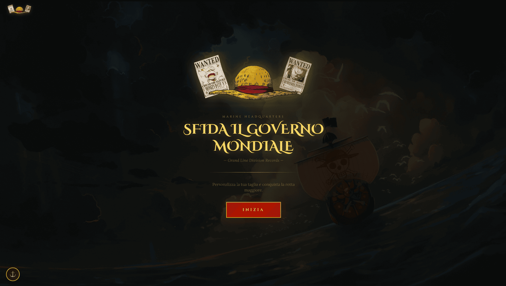

Wanted OP - Web Application
Web app that lets users create custom One Piece-style wanted posters with their own photo and bounty.
Python
FastAPI
React
Web app that lets users create custom One Piece-style wanted posters with their own photo and bounty.
OneBounty (Wanted OP – Web Application) generates One Piece-style wanted posters from an uploaded photograph. A short wizard guides the user through uploading and cropping the portrait, entering a pirate name and a bounty in Berry, choosing how the pirate is wanted, and downloading the result.
The poster is rendered on the server rather than in the browser, so the output is identical whatever the device or browser. The interface is a multi-step wizard with animated transitions, so the form never shows everything at once.
The back end is deliberately small and stateless: nothing is saved, and the image lives only for the duration of the request.
A drag-and-drop upload is followed by an in-browser crop locked to a fixed portrait ratio, so the face always lands in the right place. A pastel slider shifts the portrait towards the hand-drawn look of the original posters, and the finished poster is offered for download at full resolution.

A React and TypeScript front end built with Vite sends the cropped image and form fields to a small FastAPI service, which composes the poster with Pillow and returns it as an image.
Backend logic: multipart validation, the pastel transformation of the uploaded portrait and the orchestration of the poster rendering.
Exposes the poster endpoint, handles the upload and streams the rendered image back to the browser.
Do the actual compositing — parchment background, portrait placement, name, bounty and capture condition typeset in the series' own layout.
Builds the wizard: upload zone, crop modal, form pages and result page, with the poster held in a typed in-memory blob store between steps.
Dev server and build tooling for the frontend, proxying API calls to the FastAPI backend during development.
Server hosting the FastAPI application during development and production.